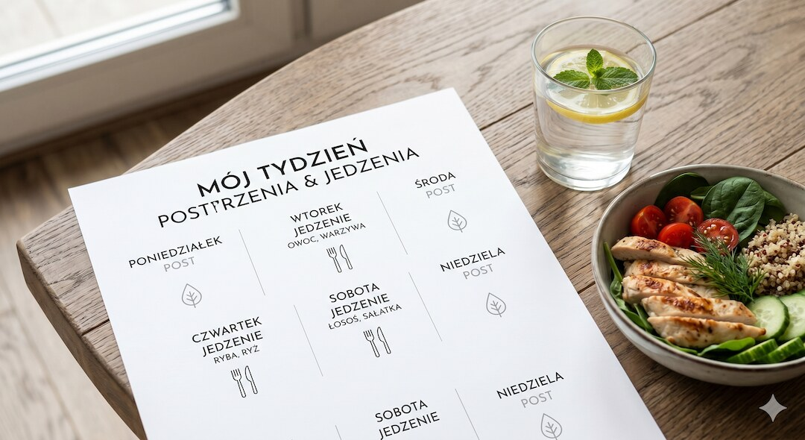
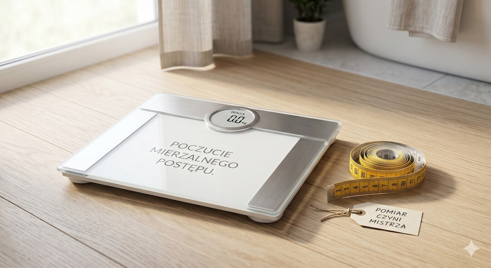
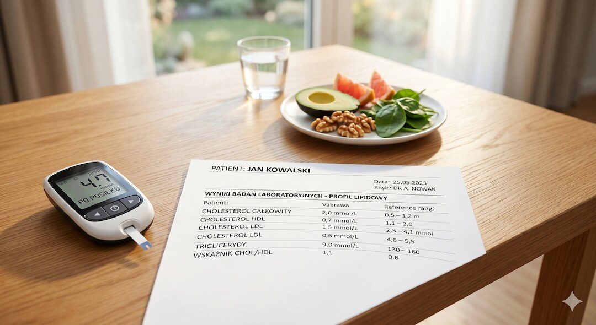
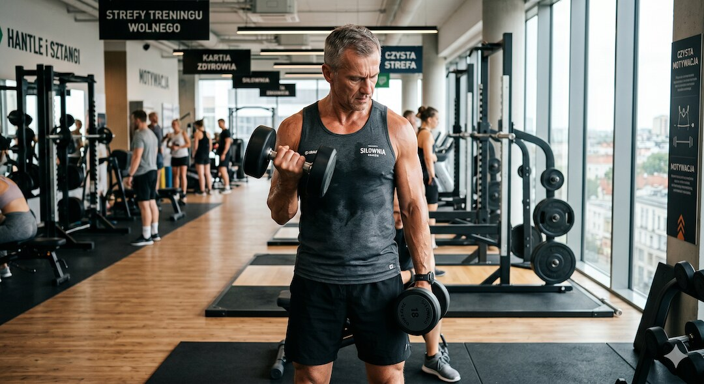
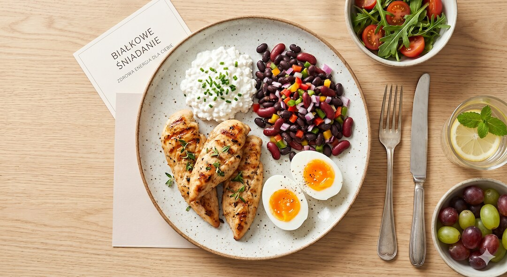
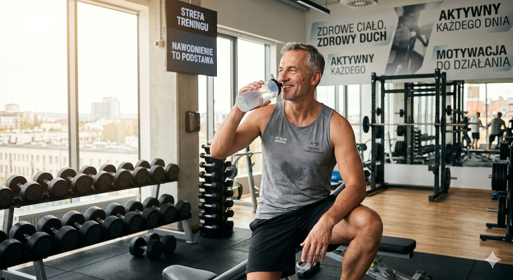

Dieta 50/50 brzmi jak marzenie leniwego odchudzania: jeden dzień jesz prawie nic, następnego prawie wszystko. W sieci reklamują ją jako jedyny post „udowodniony naukowo”. Sprawdziłem, co naprawdę pokazują badania — i gdzie po pięćdziesiątce zaczynają się schody, zwłaszcza z mięśniami.
Szybka odpowiedź
Dieta 50/50, czyli post naprzemienny polegający na przeplataniu dni jedzenia z dniami głębokiego ograniczenia kalorii do 500 kcal, daje w odchudzaniu efekty porównywalne ze zwykłą redukcją, jednak po pięćdziesiątce kluczem do sukcesu jest spożywanie 1,0–1,2 g białka na kilogram masy ciała oraz trening oporowy, które chronią mięśnie przed sarkopenią.
Kluczowe wnioski
- Dieta 50/50 (post naprzemienny, ADF) to naprzemienne dni: około 25% zapotrzebowania w dzień postu i jedzenie do woli w dzień „uczty”.
- W odchudzaniu wypada podobnie jak zwykłe liczenie kalorii — w rocznym badaniu post naprzemienny dał około 6% spadku masy, codzienna redukcja około 5%, bez istotnej różnicy.
- Po 50-tce realnym ryzykiem nie jest tłuszcz, tylko mięśnie — każda redukcja je uszczupla, a sarkopenia i tak gra przeciwko Tobie.
- Klucz to białko (mniej więcej 1,0–1,2 g na kilogram masy ciała dziennie wg ESPEN) i trening siłowy. Bez nich post zżera mięśnie razem z tłuszczem.
Czym właściwie jest dieta 50/50?
Dieta 50/50 to spolszczona nazwa postu naprzemiennego, po angielsku alternate-day fasting (ADF). Zasada jest banalnie prosta: jeden dzień jesz bardzo mało — zwykle około jednej czwartej swojego zapotrzebowania, czyli mniej więcej 500 kalorii — a następnego dnia jesz normalnie, bez liczenia. I tak na zmianę. Spopularyzowała ją amerykańska badaczka Krista Varady.
To jedna z odmian postu przerywanego, obok schematu 16/8 (16 godzin postu, 8 godzin jedzenia) i diety 5:2 (dwa dni ograniczeń w tygodniu). W diecie 50/50 dni postu i dni jedzenia przeplatają się jeden po drugim — stąd nazwa „pół na pół”. Jeśli zastanawiasz się, który wariant jest łagodniejszy, więcej znajdziesz w naszym tekście o poście przerywanym 16/8.
Ważne rozróżnienie: dzień postu to nie pełna głodówka „zero kalorii”. W większości badań Varady ludzie zjadali w tym dniu jeden większy posiłek, najczęściej w porze obiadu. W dzień jedzenia nie ma sztywnych restrykcji, ale „bez restrykcji” nie znaczy „pączki bez opamiętania”.

Czy dieta 50/50 naprawdę odchudza?
Odchudza, ale bez magii. Najmocniejszy dowód to roczne badanie z randomizacją na stu dorosłych z otyłością, w którym porównano post naprzemienny, codzienną redukcję kalorii i brak interwencji. Po roku grupa postna schudła około 6% masy ciała, grupa codziennej redukcji około 5%, a różnica między tymi metodami nie była istotna statystycznie.
To samo widać w dużych przeglądach. W sieciowej metaanalizie obejmującej 99 badań i ponad 6500 osób wszystkie formy postu przerywanego oraz klasyczna redukcja kalorii dawały spadek masy ciała w porównaniu z jedzeniem bez ograniczeń, a post naprzemienny wypadał odrobinę lepiej niż codzienna redukcja. W innej metaanalizie 47 badań to właśnie ADF dał największy średni spadek masy.
Wniosek bez owijania: dieta 50/50 działa, bo robi deficyt kaloryczny — tyle że w przebraniu. Jej przewaga jest głównie psychologiczna. Niektórym łatwiej wytrzymać jeden trudny dzień ze świadomością, że jutro będzie luźniej, niż codziennie odmawiać sobie po trochu. W tym samym rocznym badaniu sporo osób jednak zrezygnowało, więc „łatwiej” nie znaczy „dla każdego”.

Co dieta 50/50 robi z cukrem i cholesterolem?
Tu robi się ciekawiej. Metaanaliza poświęcona wyłącznie postowi naprzemiennemu pokazała, że w ciągu pół roku obniża on masę ciała, tkankę tłuszczową i cholesterol całkowity w porównaniu z grupą kontrolną, a u osób po czterdziestce z otyłością zmniejsza też obwód talii. Część badań notuje również lepszą wrażliwość na insulinę, czyli sprawniejszą kontrolę cukru.
Zanim jednak ogłosisz cud — sporo z tych korzyści to po prostu skutek schudnięcia, a nie samego poszczenia. W badaniu na szczupłych, zdrowych ochotnikach post naprzemienny redukował tłuszcz słabiej niż dopasowana codzienna redukcja kalorii i nie dawał osobnych „magicznych” efektów metabolicznych. Innymi słowy: im więcej masz do zrzucenia, tym więcej zyskasz.
Jeśli walczysz z podwyższonym cholesterolem, post może pomóc, ale nie zastąpi całej układanki. O tym, jak ruch wpływa na profil lipidowy i serce, pisaliśmy w tekście o cardio kontra siła po 50-tce.

Czy po pięćdziesiątce stracisz na niej mięśnie?
To jest pytanie, które po 50-tce powinno Cię obchodzić bardziej niż liczba na wadze. Masa mięśniowa spada z wiekiem, a po pięćdziesiątce ten proces przyspiesza — to sarkopenia. Każda redukcja masy ciała, niezależnie od metody, zabiera nie tylko tłuszcz, ale i trochę mięśni. A mięśni po 50-tce nie chcesz oddawać za darmo.
Dane o samym poście naprzemiennym są mieszane. Część metaanaliz sugeruje, że ADF zachowuje beztłuszczową masę ciała nie gorzej niż codzienna redukcja kalorii. W badaniu na zdrowych ochotnikach uczestnicy stracili około 1,9% objętości mięśni mierzonej rezonansem, ale stosunek tłuszczu do mięśni i tak się poprawił, a krótkoterminowo post nie hamował syntezy białek mięśniowych.
Tłumacząc to na ludzki: ryzyko utraty mięśni jest realne, ale dające się okiełznać. Decyduje nie sam post, tylko co robisz wokół niego — ile jesz białka i czy podnosisz ciężary. Bez tego oddajesz mięśnie. Z tym — chronisz je. Po szczegóły zajrzyj do tekstu o treningu siłowym po 50-tce.

Ile białka jeść, żeby ochronić mięśnie?
Tu są konkretne liczby. Eksperci ESPEN i grupy PROT-AGE zalecają zdrowym starszym osobom co najmniej 1,0–1,2 grama białka na kilogram masy ciała dziennie, czyli wyraźnie więcej niż ogólne 0,8 g/kg dla młodych dorosłych. Przy chorobie przewlekłej zalecenia rosną do 1,2–1,5 g/kg. Powód jest prosty: starsze mięśnie gorzej reagują na białko.
To zjawisko to oporność anaboliczna — żeby pobudzić budowę mięśni, dojrzały organizm potrzebuje większej porcji białka naraz. Dlatego zamiast jednej kupki na kolację lepiej rozłożyć je na posiłki, celując w mniej więcej 25–30 gramów dobrej jakości białka na posiłek. W dzień postu też nie odpuszczaj białka — to ono trzyma mięśnie.
Konkretne źródła i prosty plan na talerz rozpisaliśmy w osobnym tekście o białku po 50-tce. Jeśli zaczynasz dietę 50/50, potraktuj białko jako warunek, a nie dodatek.

Dla kogo dieta 50/50 nie jest dobrym pomysłem?
Post naprzemienny to nie zabawa dla każdego. Jeśli masz cukrzycę i bierzesz leki obniżające cukier, albo leki na ciśnienie, dzień postu może zbić te wartości za nisko — to wymaga rozmowy z lekarzem i ewentualnej korekty dawek. Ciąża, karmienie, niedowaga oraz przeszłość z zaburzeniami odżywiania to sytuacje, w których takiego postu po prostu nie zaczynaj sam.
Druga pułapka jest mniej dramatyczna, ale częsta: dzień „uczty” łatwo zamienia się w dzień objadania się byle czym. Jeśli po dniu postu rzucasz się na przetworzone jedzenie, cały deficyt znika, a zostaje tylko huśtawka. Post nie unieważnia zasady, że jakość jedzenia ma znaczenie.
- Cukrzyca leczona insuliną lub lekami obniżającymi cukier — najpierw lekarz.
- Leki na nadciśnienie — dni postu mogą nasilić spadki ciśnienia.
- Ciąża i karmienie piersią.
- Niedowaga lub zaawansowana sarkopenia.
- Przeszłość z zaburzeniami odżywiania.
Jak stosować dietę 50/50 mądrze po 50-tce?
Skoro już chcesz spróbować, zrób to tak, żeby chronić mięśnie i serce, a nie tylko gonić wagę. Podstawa to trening siłowy dwa–trzy razy w tygodniu, białko każdego dnia (także w dzień postu), dobre nawodnienie i obserwacja samopoczucia. Zawroty głowy, osłabienie czy rozbicie to sygnał, żeby odpuścić, a nie zaciskać zęby.
Nie przedłużaj dni postu na siłę i nie rób z tego wyścigu. Jeśli model „pół na pół” jest dla Ciebie za ostry, łagodniejszy schemat 16/8 bywa łatwiejszy do utrzymania na co dzień. I pamiętaj, że post bez snu i odpoczynku to droga donikąd — dlaczego, tłumaczymy w tekście o śnie i regeneracji po 50-tce.
- Trening siłowy 2–3 razy w tygodniu — to on broni mięśni.
- Białko codziennie, również w dzień postu.
- Pij wodę, czarną kawę i herbatę bez cukru.
- Słuchaj ciała — osłabienie i zawroty to znak stop.
- Nie przedłużaj postów ponad jedną dobę.

Najczęściej zadawane pytania
Czy dieta 50/50 jest skuteczniejsza niż zwykłe liczenie kalorii?
W rocznym badaniu z randomizacją nie była. Spadek masy ciała przy poście naprzemiennym (około 6%) i przy codziennej redukcji kalorii (około 5%) był podobny, bez istotnej różnicy. Wybór zależy więc od tego, co łatwiej Ci utrzymać.
Ile realnie można schudnąć na diecie 50/50?
Przy trzymaniu się zasad to średnio około pół kilograma tygodniowo. Metaanalizy potwierdzają spadek masy o kilka kilogramów w porównaniu z brakiem interwencji, ale liczy się konsekwencja, a nie sam rytm postu.
Czy w dzień postu mogę pić kawę?
Tak, czarna kawa, herbata oraz woda bez cukru są w pełni dozwolone, ponieważ nie wnoszą żadnych kalorii. Unikaj jednak dodawania mleka, cukru czy słodzików, które mogłyby niepotrzebnie zakłócić proces postu.
Czy dieta 50/50 niszczy mięśnie po pięćdziesiątce?
Tak, istnieje takie ryzyko, jeśli drastycznie ograniczysz kalorie bez dbania o podaż białka oraz regularny trening oporowy. Odpowiednia ilość protein i ćwiczenia z obciążeniem skutecznie chronią tkankę mięśniową przed degradacją podczas redukcji.
Chcesz uporządkować LDL, ApoB, trójglicerydy i plan badań? Zobacz Centrum Cholesterolu i Badań po 50-tce.
Źródła
- Varady i in. (2013), Alternate day fasting for weight loss — randomizowane badanie, Nutrition Journal
- Trepanowski, Varady i in. (2017/2018) — skład ciała w rocznym RCT postu naprzemiennego (analiza wtórna, PMC)
- Sieciowa metaanaliza postu przerywanego — 99 RCT, ponad 6500 osób (PMC)
- Metaanaliza postu naprzemiennego a ryzyko kardiometaboliczne (ScienceDirect)
- Bayesowska sieciowa metaanaliza 47 RCT — porównanie modeli redukcji kalorii (PMC)
- Templeman i in. (2021) — post naprzemienny a redukcja kalorii u szczupłych, Science Translational Medicine
- ESPEN Expert Group — zapotrzebowanie na białko i ćwiczenia w starszym wieku, Clinical Nutrition
- Przegląd: żywienie a sarkopenia — białko i jego rozkład w posiłkach (PMC)
- Aktualizacja: białko, leucyna, omega-3 i witamina D w profilaktyce sarkopenii (PMC)
Uwaga: Artykuł ma charakter informacyjny i edukacyjny. Nie zastępuje konsultacji lekarskiej, diagnozy ani leczenia.